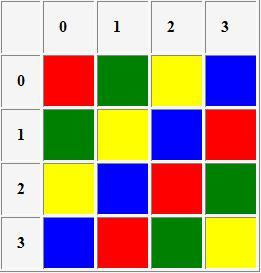

| 
|
Group Color Representationcreated by : Nikolas KaralisHelp How to Examples Links |
Klein Vierergruppe
------------------
e a b c
a e c b
b c e a
c b a e
Order : 4
Elements : e a b c
Colors : Red Green Yellow Blue
Z2
-------
0 1 2 3
1 2 3 0
2 3 0 1
3 0 1 2
Order : 4
Elements : 0 1 2 3
Colors : Red Green Yellow Blue
D8
----------------------
I T R R2 R3 RT R2T R3T
T I R3T R2T RT R3 R2 R
R RT R2 R3 I R2T R3T T
R2 R2T R3 I R R3T T RT
R3 R3T I R R2 T RT R2T
RT R T R3T R2T I R3 R2
R2T R2 RT T R3T R I R3
R3T R3 R2T RT T R2 R I
Order : 8
Elements : I T R R2 R3 RT R2T R3T
Colors : Red Green Yellow Blue Black Pink Orange White
Quaternion
-----------
1 i j k -1 -i -j -k
i -1 k -j -i 1 -k j
j -k -1 i -j k 1 -i
k j -i -1 -k -j i 1
-1 -i -j -k 1 i j k
-i 1 -k j i -1 k -j
-j k 1 -i j -k -1 i
-k -j i 1 k j -i -1
Order : 8
Elements : 1 i j k -1 -i -j -k
Colors : Red Green Yellow Blue Black Pink Orange White
G={0,2,4,6,1,3,5,7}, addition modulo 8
--------------------------------------
0 2 4 6 1 3 5 7
2 4 6 0 3 5 7 1
4 6 0 2 5 7 1 3
6 0 2 4 7 1 3 5
1 3 5 7 2 4 6 0
3 5 7 1 4 6 0 2
5 7 1 3 6 0 2 4
7 1 3 5 0 2 4 6
Order : 8
Elements : 0 1 2 3 4 5 6 7
Colors : Red Green Yellow Blue Black Pink Orange White
GF(4):
Additive
---------
0 1 A B
1 0 B A
A B 0 1
B A 1 0
Order : 4
Elements : 0 1 A B
Colors : Red Green Yellow Blue
Multiplicative
--------------
0 0 0 0
0 1 A B
0 A B 1
0 B 1 A
Order : 4
Elements : 0 1 A B
Colors : Red Green Yellow Blue
GF(3):
Additive
--------
0 1 2
1 2 0
2 0 1
Order : 3
Elements : 0 1 2
Colors : Red Green Blue
Multiplicative
--------------
0 0 0
0 1 2
0 2 1
Order : 3
Elements : 0 1 2
Colors : Red Green Blue
GF(2):
Additive
--------
01
10
Order : 2
Elements : 0 1
Colors : Red Green
Multiplicative
--------------
00
01
Order : 2
Elements : 0 1
Colors : Red Green